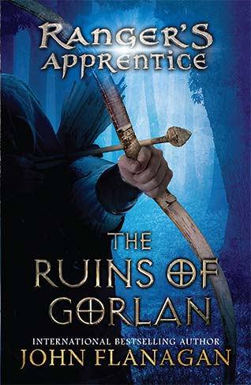
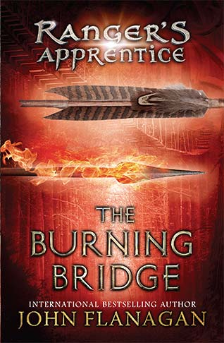
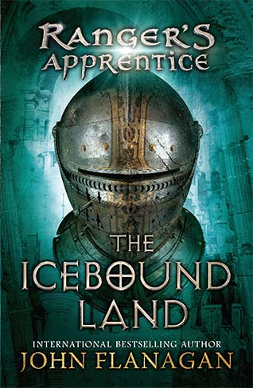
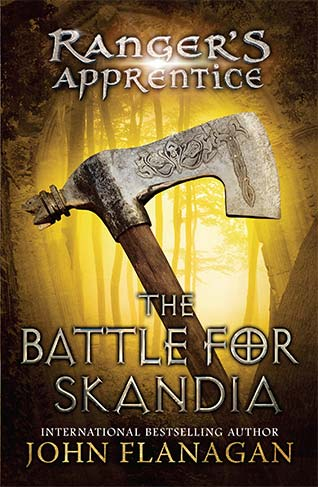

Books
The Ruins of Gorlan
The Ruins of Gorlan is the first book in the Ranger's Apprentice series. Meet Will, a 15 year old boy who's father died as a mighty warrior. Hoping to honor him, Will hopes to be chosen for Battleschool, where the knights and warriors of the realm are trained. However, he is chosen instead to join the mysterious Ranger Corps, a group which is rumored to practice black magic and dark sorcery. In the middle of his training, Will learns that a huge battle is brewing, against an enemy long considered dead.
The Burning Bridge
The Burning Bridge is the second book in the Ranger's Apprentice series. The evil lord, Morgarath, has been secretly massing his forces, readying to strike the Kingdom of Araluen. Will and his friend Horace, an apprentice warrior, are sent on a Ranger's mission to the neighboring country of Celtica. However, all villages, outposts and mines are abandoned. The Celts have vanished. They soon discover that the King's army is in peril of being destroyed by a cunning ambush. Only Will, Horace and a mysterious girl named Evanlyn stand between them.
The Icebound Land
The Icebound Land is the third book in the series. Will and Evanlyn have been kidnapped following the battle with Lord Morgarath. They are bound for Skandia, the unforgiving land of ice in the north. Halt, Will's mentor, has sworn to save his apprentice by any means, even if it means defying the King and being expelled from the Ranger Corps. Joined by Horace, the older Ranger and the young knight set off to the forbidding cold in Skandia. Along the way, they are challenged by many freelance knights, but Horace has learned a thing or two in combat. While he gains reputation, Will and Evanlyn struggle to survive in Skandia as slaves.
The Battle For Skandia
The Battle For Skandia Follows Will's and Evanlyn's narrow escape from Skandia. The young Ranger had become hopelessly addicted to warmweed, a drug fed to all slaves to keep them working in the cold without any thought of rebellion. Evanlyn plans to get the both of them out of the freezing land of Skandia. Yet she is taken captive by Temujai warriors, fierce warriors from the east. Halt makes the discovery that the entire Temujai army has breached Skandia's borders. Left unchecked, the fighters would blaze towards Araluen. An unlikely alliance must be made.